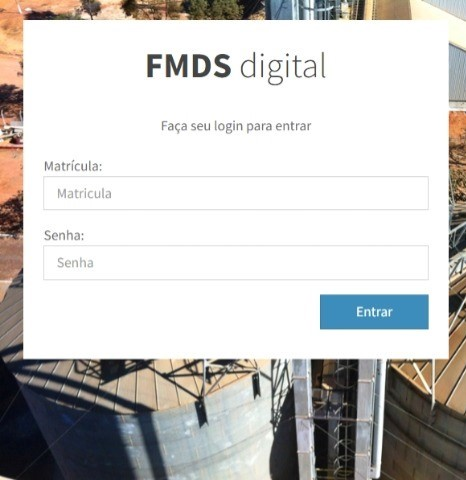

Trabalho -> Rede VLI
Atribuições: Chefe de Projeto, Full Stack Developer
Implantado na unidae Pirapora da VLI logística o aplicativo Rede VLI é um ERP implementado sob a forma de aplicativo web desenvolvido para facilitar a análise de dados para a obtenção de insights sobre a produção.
Download compiled
Download source
O problema
As informações relevantes para o processo produtivo da unidade ficavam dispersas em muitos locais como planilhas de excel e mensagens de email, o que muitas vezes atrasava ou impedia a obtenção dessas mesmas informações.
Meu papel
O app traz a solução concentrando as informações de produção em um único lugar. As informações passaram a ser obtidas de forma automatizada por meio da instalação de macros nas planilhas excel já utilizadas, tal técnica permitiu a inserção do app aos processos da empresa sem causar prejuízos de adequação. As planilhas se conectam com as APIs de comunicação do app para realizar o envio de informações para um banco de dados na nuvem.
Tecnologias:
- Javascript
- Bootstrap
- PHP
- MySQL
- Send PUsh
Premiado na convenção regional de melhoria contínua FCA/VLI de 2019.
4. Basic HTML template
With a brief intro into the contents out of the way, we can focus on putting Bootstrap to use. To do that, we'll utilize a basic HTML template that includes everything we mentioned in the File structure.
Now, here's a look at a typical HTML file:
<!DOCTYPE html>
<html>
<head>
<title>Bootstrap 101 Template</title>
<meta name="viewport" content="width=device-width, initial-scale=1.0">
</head>
<body>
<h1>Hello, world!</h1>
<script src="http://code.jquery.com/jquery.js"></script>
</body>
</html>
To make this a Bootstrapped template, just include the appropriate CSS and JS files:
<!DOCTYPE html>
<html>
<head>
<title>Bootstrap 101 Template</title>
<meta name="viewport" content="width=device-width, initial-scale=1.0">
<!-- Bootstrap -->
<link href="css/bootstrap.min.css" rel="stylesheet" media="screen">
</head>
<body>
<h1>Hello, world!</h1>
<script src="http://code.jquery.com/jquery.js"></script>
<script src="js/bootstrap.min.js"></script>
</body>
</html>
And you're set! With those two files added, you can begin to develop any site or application with Bootstrap.
5. Examples
Move beyond the base template with a few example layouts. We encourage folks to iterate on these examples and not simply use them as an end result.
-

Starter template
A barebones HTML document with all the Bootstrap CSS and JavaScript included.
-

Basic marketing site
Featuring a hero unit for a primary message and three supporting elements.
-

Fluid layout
Uses our new responsive, fluid grid system to create a seamless liquid layout.
-

Narrow marketing
Slim, lightweight marketing template for small projects or teams.
-

Justified nav
Marketing page with equal-width navigation links in a modified navbar.
-

Sign in
Barebones sign in form with custom, larger form controls and a flexible layout.
-

Sticky footer
Pin a fixed-height footer to the bottom of the user's viewport.
-

Carousel jumbotron
A more interactive riff on the basic marketing site featuring a prominent carousel.
What next?
Head to the docs for information, examples, and code snippets, or take the next leap and customize Bootstrap for any upcoming project.
Visit the Bootstrap docs Customize Bootstrap